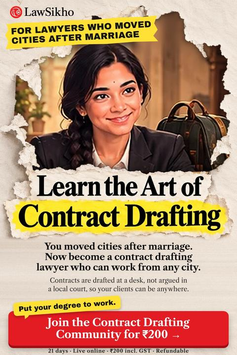

Contracts are drafted at a desk, not argued in a local court, so your clients can be anywhere.
What is contract drafting? Contract drafting is writing the agreements a business signs: who does what, who pays, and who carries each risk.
LawSikho Contract Drafting Community · 21 Oct to 11 Nov · 9 live evening sessions · one document a day
Including GST. Refundable.
All 21 days, live online.
₹200 incl. GST · Refundable · Live online · 21 Oct to 11 Nov

You built contacts, learnt a bench and knew which clerk to ask. Then marriage brought a move, and that local knowledge did not travel with you. Starting again in a new court can feel like starting from zero.
Contract drafting works differently. A contract is written at a desk and often signed by email. A startup in Pune or Hyderabad cares about your draft, not about which court you appeared in. Your training moved with you; only the courtroom stayed behind.
A drafting practice is portable. Clients find you online, documents go by email, and meetings happen on video. If your family moves again, the practice moves too. Businesses keep needing employment agreements, vendor contracts and NDAs (non-disclosure agreements), so the work builds a client list that belongs to you, with income that can grow wherever you live.
Join the Contract Drafting Community for ₹200₹200 incl. GST · Refundable · Live online · 21 Oct to 11 Nov
A new court means new judges, new clerks and new local practice. Building a name there takes years, and another family move would reset it all over again.
A firm desk gives structure, but it often puts an experienced lawyer back at the start. The hours also tie you to one office in one city.
Some lawyers return to the old city for hearings. The travel costs money and time, and family life in the new city quietly pays the price.
Your legal reasoning, your English and your attention to detail all came with you. What changed is that court practice depends on place, and drafting does not. The gap is choosing a portable kind of legal work and practising its documents until you can offer them with confidence. Positioning and practice decide the next step.
Most are small firms. Each one that collects customer data needs a privacy notice, drafted from anywhere.
Source: UK Department for Business and Trade, Business population estimates 2025, Oct 2025Businesses that hold customer or staff data need privacy policies and vendor terms written.
Source: DPDP Rules 2025, MeitY, notified 14 Nov 2025; PIBEach one signs founder, hiring and vendor contracts, and most have no lawyer on staff.
Source: DPIIT data via Inc42; Manorama Yearbook, Apr 2026Moving cities forces you to rebuild, and that habit helps here. You have already set up a home, found new services and learnt new systems. Building a drafting practice asks for the same steady effort, applied this time to your law degree.
₹200 incl. GST · Refundable · Live online · 21 Oct to 11 Nov
Every business that hires needs an employment agreement. In the community you draft one in full, covering probation, notice and confidentiality, plus a remote work monitoring policy, so it suits a team in any city.
| Learning alone from samples | A long theory course | Contract Drafting Community | |
|---|---|---|---|
| Time | Open-ended | Months | 21 days |
| What you produce | Copies of other people's drafts | Notes and exams | Practice on 16 business documents |
| Live practice | None | Lectures | 9 live evening sessions |
| Reaching clients | Left to you | Rarely covered | UK small businesses, startups, LinkedIn, a first article |
| Cost to you | Your time | A large fee | ₹200 incl. GST, refundable |
The fee is ₹200 including GST, and it is refundable. You need no drafting experience on day one.
Join the Contract Drafting Community for ₹200₹200 incl. GST · Refundable · Live online · 21 Oct to 11 Nov
Drafting clients are not limited to your city. Sessions 3, 6 and 8 show how to list a service online, pitch startups directly and build a LinkedIn profile, so people can find you from anywhere.
Yes, it is a strong base. The community starts from the parts of a contract and builds up, and your experience of disputes helps you see which terms need to be written clearly.
Sessions are live and recordings are not promised. The daily reading and quiz stay in the WhatsApp group, so you can keep up with the documents on your own time.
"I am learning contract drafting so my legal work can move with us. It costs ₹200 for 21 days."
Draft one document a day, join the evening sessions and learn how founders find drafting lawyers online. If another move comes, your practice can come along with you.
21 days, 21 Oct to 11 Nov. 9 live evening sessions. ₹200 including GST, refundable.
Join the Contract Drafting Community for ₹200₹200 incl. GST · Refundable · Live online · 21 Oct to 11 Nov
LawSikho runs this community to build practical drafting skills and show where the earning opportunities are. We do not promise any job, client or income. Sessions are live; recordings are not promised.